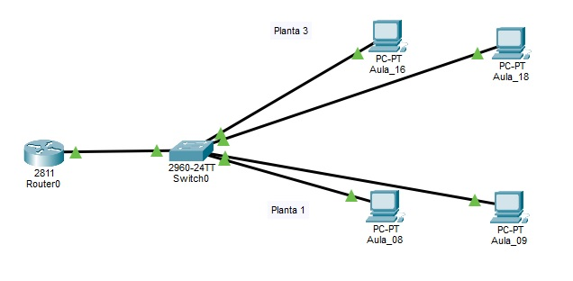

Práctica con Packet Tracer: La red de nuestro instituto
¡Vamos a diseñar la red de nuestro instituto Imagina que tenemos que dar conexión al ordenador del aula 18 situado en la planta 3, al ordenador del aula 16 situado en la planta 3, al ordenador del aula 9 situado en la planta 1 y al ordenador del aula 8 situado en la planta 1, pero todos conectados al mismo "cerebro" (el Router del centro).
Paso 1: Componentes del Centro
Busca y arrastra al lienzo estos equipos:
- 1 Router (Modelo 2811): Será el que nos da salida a Internet.
- 1 Switch (Modelo 2960):
- 4 PCs: Cambia los nombres para identificarlos (haz doble clic sobre el texto debajo del icono):
- Aula_18
- Aula_16
- Aula_09
- Aula_08
Paso 2: Conexión de cables (¡Truco para evitar errores!)
Usa el rayo naranja automático para conectar los 4 ordenadores al mismo Switch. Finalmente, conecta el Switch al Router.
Paso 3: Configuración de "Matrículas" (IP)
Entra en cada PC (Desktop > IP Configuration) y pon estos datos. Asegúrate de que al escribir la IP, haces clic en el cuadro de la máscara para que se rellene sola:
| Ubicación | Equipo | Dirección IP | Puerta de enlace |
|---|---|---|---|
| Planta 1 | Aula_08 | 192.168.1.10 | 192.168.1.1 |
| Aula_09 | 192.168.1.11 | 192.168.1.1 | |
| Planta 3 | Aula_16 | 192.168.1.30 | 192.168.1.1 |
| Aula_18 | 192.168.1.31 | 192.168.1.1 |
Paso 4: Configurar la Puerta del Instituto (Router)
Para que los mensajes puedan circular, hay que encender el Router:
- Clica en el Router -> pestaña Config -> FastEthernet 0/0 (o el puerto donde conectaste el cable).
- Marca Port Status: ON.
- IP Address:
192.168.1.1 - Máscara:
255.255.255.0
Paso 5: Prueba de Red
¿Puede el ordenador del aula 8 hablar con el del aula 18? Entra en el Aula_08, abre el Command Prompt y escribe:
ping 192.168.1.31
(Recuerda: si el ping falla, borra los cables y vuelve a conectarlos usando el rayo naranja automático).
Entrega: Guarda el archivo como "Red_IES_Cuenca_Nalon_Nombre.pkt" y envíalo como tarea al equipo clase de Teams.
